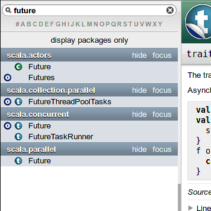
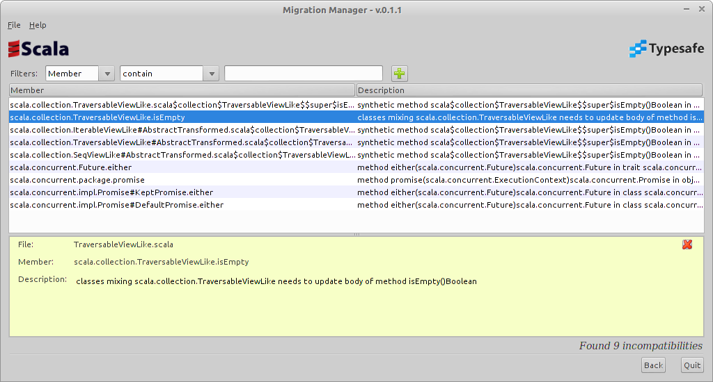

Scala-Puzzlers
Kriegsgeschichten aus Sprach- und Bibliotheksdesign
Oder: WTF, wer hat das gemergt?

Kriegsgeschichten aus Sprach- und Bibliotheksdesign
Oder: WTF, wer hat das gemergt?
Objektorientiert und funktional
“A drunken Martin Odersky sees a Reese's Peanut Butter Cup ad featuring somebody's peanut butter getting on somebody else's chocolate and has an idea.
He creates Scala, a language that unifies constructs from both object oriented and functional languages. This pisses off both groups and each promptly declares jihad.” ¹
¹ A Brief, Incomplete, and Mostly Wrong History of Programming Languages
Objektorientiert und funktional
Statisch typisiert, mit lokaler Typinferenz
Kompiliert zu JVM-Bytecode
Joe Armstrong:
Wir beschäftigen uns mit den letzten beiden Punkten
Unit (void)
: endet, …

remove akzeptiert zwei Argumente
CompositeThrowable ge-„wrappt“
CompositeThrowable ge-„wrappt“Hört sich völlig plausibel an, aber ...
Komplett nicht-deterministisches Exception-Handling!
Anzahl der Exceptions?


scala.mobile: Seit 5 Jahren kaputtscala.actors → Akka Aktoren? Procedures
✔ Oktale Literale
? Oktale Escapes
? Constant inlining
✔ Futures
✔ ListBuffer
✔ CompositeThrowable
/